| 1 | 2 | 3 | 4 | 5 |
| 6 | 7 | 8 | 9 | 10 |
| 11 | 12 | 13 | 14 | 15 |
| 16 | 17 |
Kanji are classified in kanji dictionaries according to their main components which are called radicals (roots) in English and 部首 (ぶしゅ) in Japanese. 部 (ぶ) means a group and 首 (しゅ) means a chief (head/neck). There are 214 historical radicals derived from the 18th century Kangxi dictionary.
Every kanji without exception only has one radical / 部首 (ぶしゅ). Each radical has a meaning(s) and lends its meaning(s) to the kanji of which it is part. Please take a look at the examples below. The right part of these three kanji is the same but the left part is different. The left part of these kanji is their radical. Note how each radical imparts its meaning to the kanji:
 (words, to speak, say). The meaning of this kanji is "poetry, poem".
(words, to speak, say). The meaning of this kanji is "poetry, poem".For this reason it is very important to learn each kanji’s radical, as well as the meaning(s) of its radical. Not all 214 radicals are in use in current Japanese but you will soon become familiar with the most important ones and their variants.
There are no official Japanese names for radicals. But there are certain commonly-used names. That is why you will find differences in the Japanese names for the radicals on different websites and dictionaries.
Radicals are categorized into seven main groups according to their position within a kanji. Please note that some kanji are also radicals in and of themselves (such as 大, 日, 月). In those cases, the kanji and the radical are one and the same, and thus the position of the radical in the kanji is irrelevant. As a result they do not fall into any one of the seven categories.
| へん (hen) | Radicals on the left side of the kanji | |
| つくり (tsukuri) | Radicals on the right | |
| かんむり (kanmuri) | Radicals on the top | |
| あし (ashi) | Radicals on the bottom | |
| かまえ (kamae) |  | Radicals which enclose the kanji |
| たれ (tare) | Radicals which "hang down" | |
| にょう (nyou) | Radicals which wrap around the bottom of a character |
| STROKE#↕ | RADICAL↕ | POSITION↕ | MEANING↕ | READING↕ | NOTES↕ |
|---|---|---|---|---|---|
| 1 | 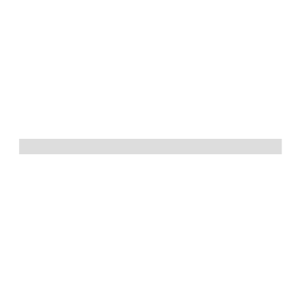 | one, horizontal stroke | いち | ||
| 1 | 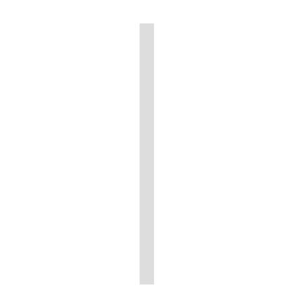 | vertical stroke | たてぼう | ||
| 1 | 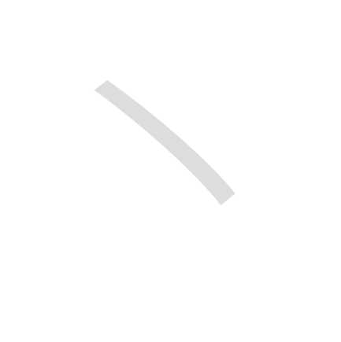 | dot | てん | ||
| 1 |  | diagonal sweeping stroke | の | ||
| 1 | 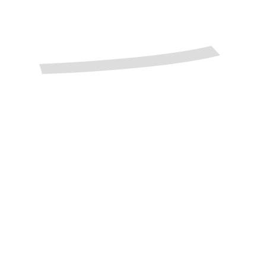 | diagonal sweeping stroke | のかんむり | a variant of ⼃（の） | |
| 1 | 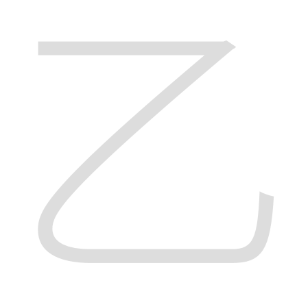 | the second | おつ | ||
| 1 | 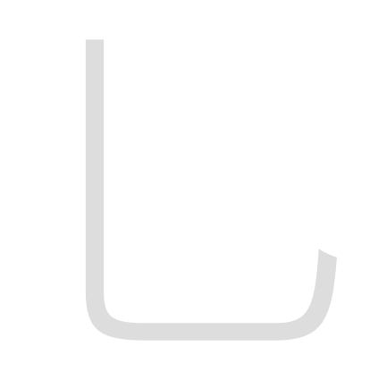 | the second | おつ | a variant of ⼄（おつ） | |
| 1 | 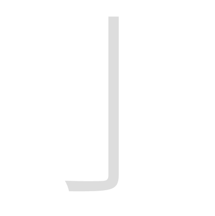 | vertical stroke with a hook | はねぼう | ||
| 2 | 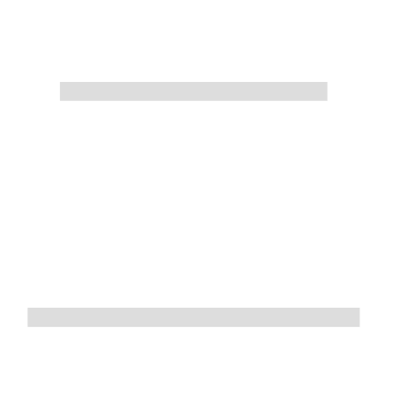 | two | に | ||
| 2 | 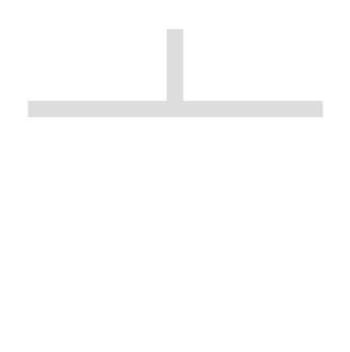 | lid, top | なべぶた | ||
| 2 | 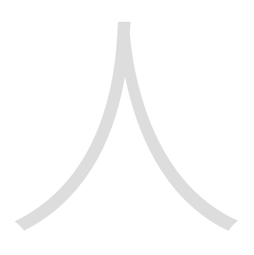 | person | ひと | ||
| 2 | 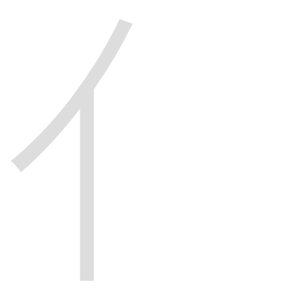 | person | にんべん | a variant of ⼈（ひと） | |
| 2 | 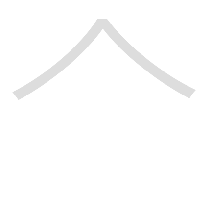 | person | ひとやね | a variant of ⼈（ひと） | |
| 2 | 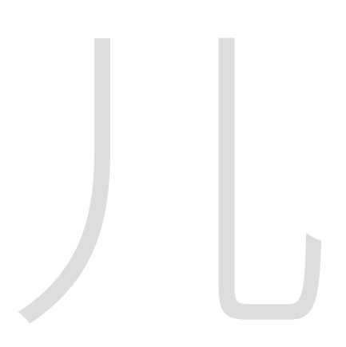 | human legs | ひとあし | ||
| 2 | 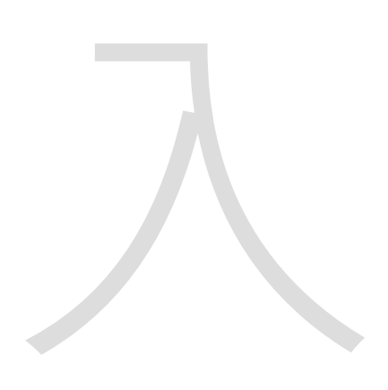 | to enter | いる | ||
| 2 | 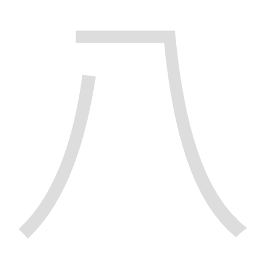 | eight | はち | ||
| 2 | 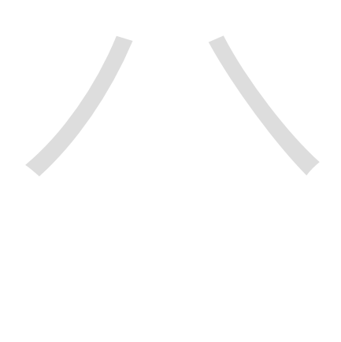 | eight | はちがしら | a variant of ⼋（はち） | |
| 2 | 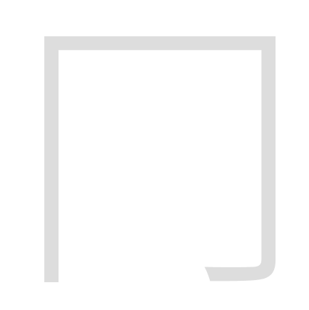 | to enclose | けいがまえ | ||
| 2 | 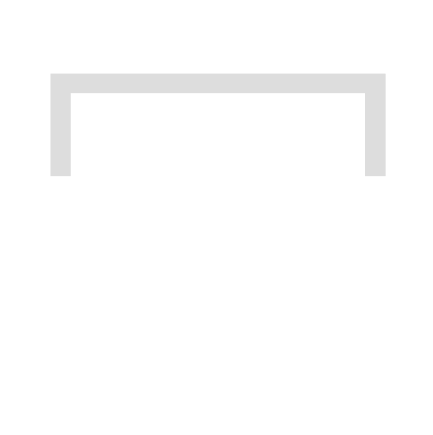 | cover, crown | わかんむり | ||
| 2 | 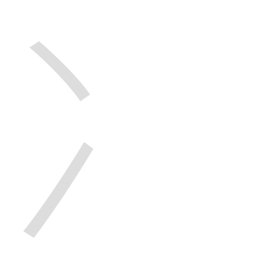 | ice | にすい | ||
| 2 | 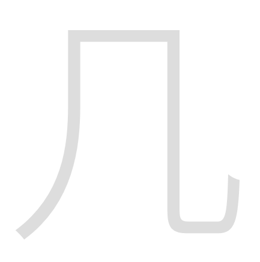 | table | きにょう | ||
| 2 | 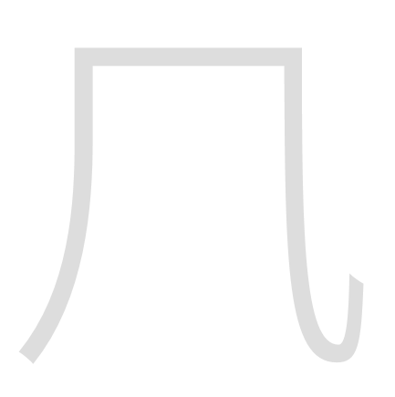 | wind | かぜかんむり | a variant of ⼏（きにょう） | |
| 2 | 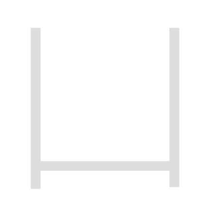 | container, open box | かんにょう | ||
| 2 | 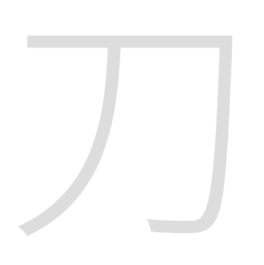 | knife, sword | かたな | ||
| 2 | 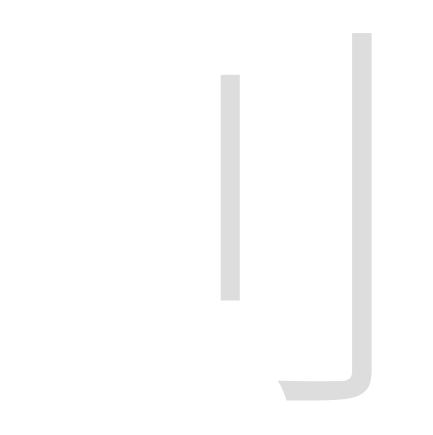 | knife, sword | りっとう | a variant of ⼑（かたな） | |
| 2 | 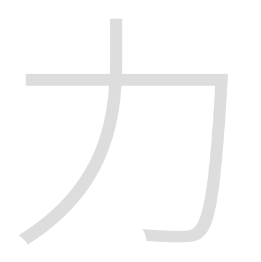 | power | ちから | ||
| 2 | 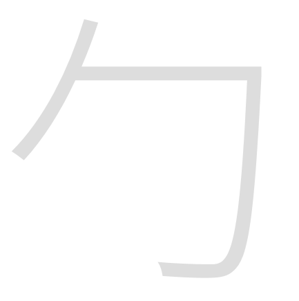 | to wrap | つつみがまえ | ||
| 2 | 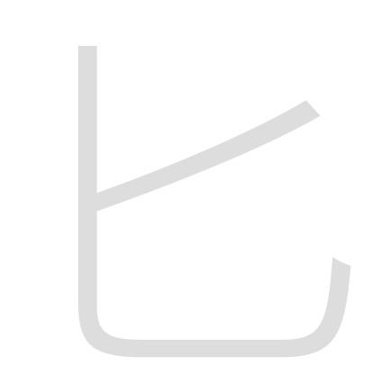 | spoon | さじ | ||
| 2 | 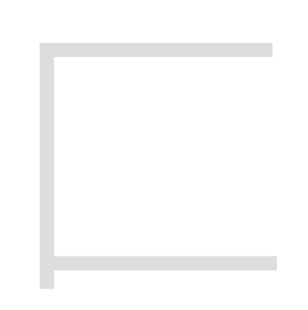 | box | はこがまえ | ||
| 2 | 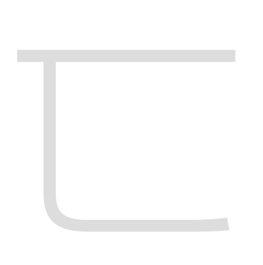 | to conceal, hide | かくしがまえ | ||
| 2 | 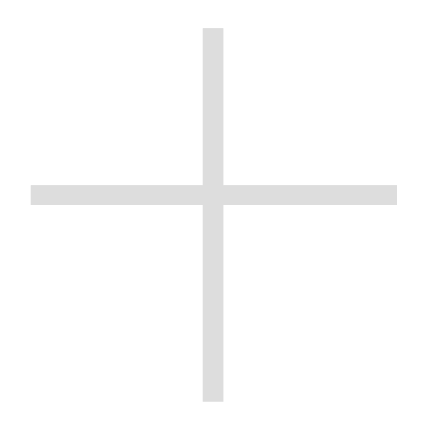 | ten | じゅう | ||
| 2 | 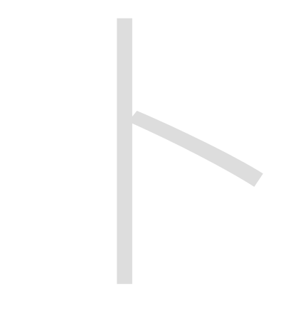 | oracle | ぼく | ||
| 2 | 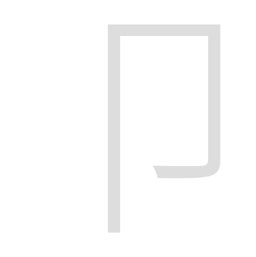 | stamp, seal | ふしづくり | ||
| 2 | 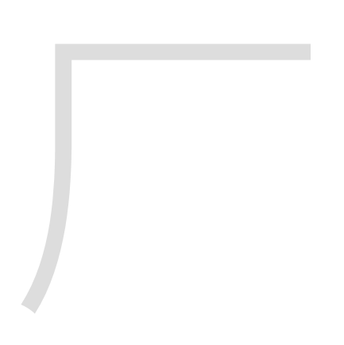 | cliff | がんだれ | ||
| 2 | 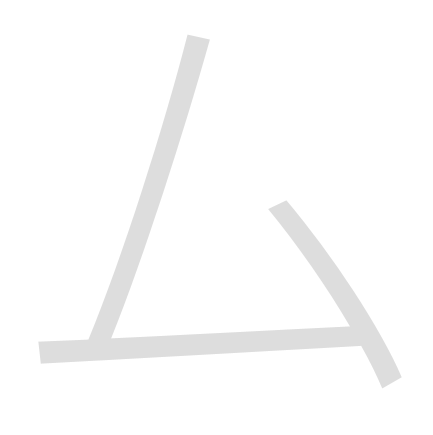 | private, Katakana Mu | む | ||
| 2 | 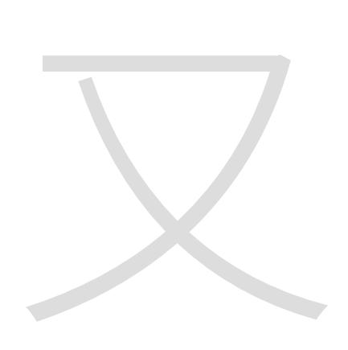 | again, right hand | また | ||
| 3 | 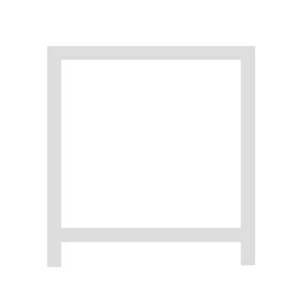 | mouth | くち | ||
| 3 | 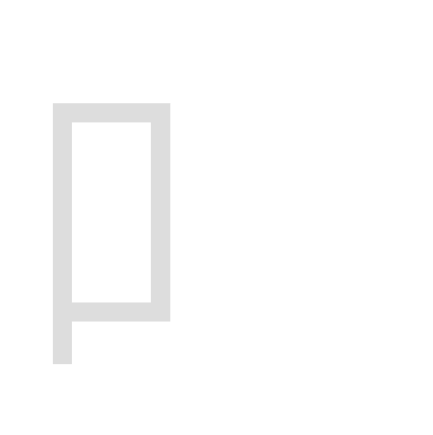 | mouth | くちへん | a variant of ⼝（くち） | |
| 3 | 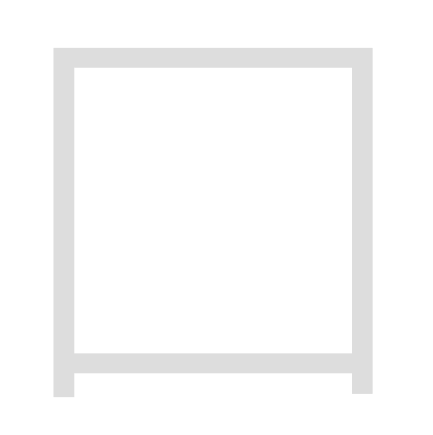 | border, territorial boundaries | くにがまえ | ||
| 3 |  | earth | つち | ||
| 3 | 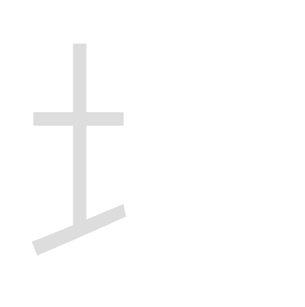 | earth | つちへん | a variant of ⼟（つち） | |
| 3 | 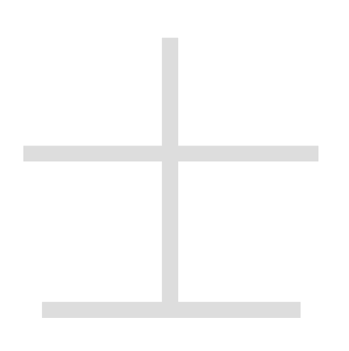 | man, scholar, samurai | さむらい | ||
| 3 | 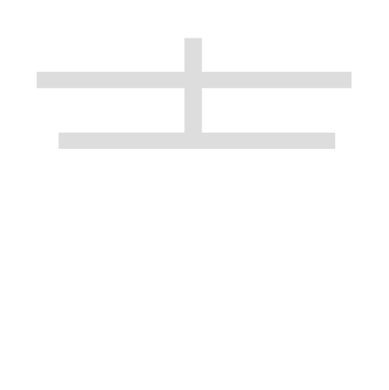 | man, scholar, samurai | さむらいかんむり | a variant of ⼠（さむらい） | |
| 3 | 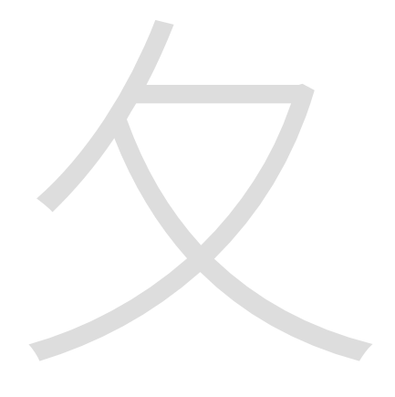 | to follow | のまた | ||
| 3 | 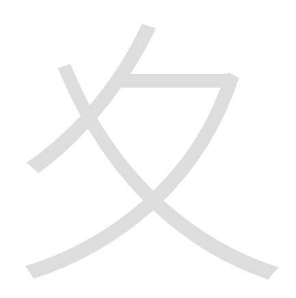 | to go slowly | なつあし | ||
| 3 | 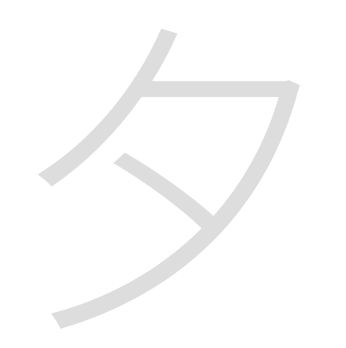 | evening | ゆうべ | ||
| 3 | 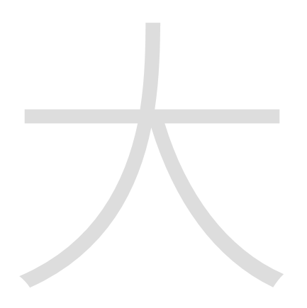 | large, big | だい | ||
| 3 | 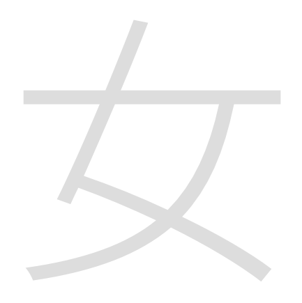 | woman | おんな | ||
| 3 | 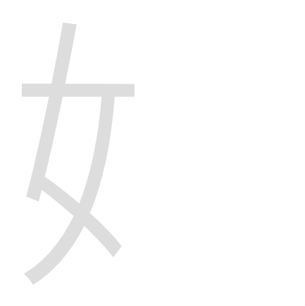 | woman | おんなへん | a variant of ⼥（おんな） | |
| 3 | 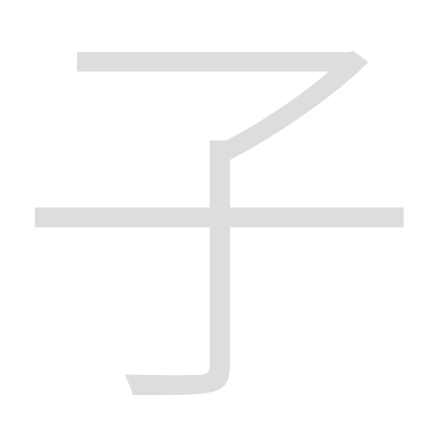 | child, son | こ | ||
| 3 | child, son | こへん | a variant of ⼦（こ） | ||
| 3 | roof, house | うかんむり | |||
| 3 | inch, (2.25 cm) | すん | |||
| 3 | inch, (2.25 cm) | すんづくり | a variant of ⼨（すん） | ||
| 3 |  | small | しょう | ||
| 3 |  | small | しょうかんむり | a variant of ⼩（しょう） | |
| 3 | lame leg | だいのまげあし | |||
| 3 | corpse, awning | しかばね | |||
| 3 | sprout | くさのめ | |||
| 3 | mountain | やま | |||
| 3 | mountain | やまへん | a variant of ⼭（やま） | ||
| 3 | mountain | やまかんむり | a variant of ⼭（やま） | ||
| 3 | winding river | まがりがわ | |||
| 3 | river | さんぼんがわ | a variant of ⼮（まがりがわ） | ||
| 3 | work, carpenter, skill | たくみ | |||
| 3 | work, carpenter, skill | たくみへん | a variant of ⼯（たくみ） | ||
| 3 | self | おのれ | |||
| 3 | cloth | はば | |||
| 3 | cloth | はばへん | a variant of ⼱（はば） | ||
| 3 | to dry, shield | かん | |||
| 3 | young, slight | いとがしら | |||
| 3 | slanting roof | まだれ | |||
| 3 | to move, stretch | えんにょう | |||
| 3 | folded hands | にじゅうあし | |||
| 3 | javelin | いぐるみ | |||
| 3 | bow （in archery） | ゆみ | |||
| 3 | bow （in archery） | ゆみへん | a variant of ⼸（ゆみ） | ||
| 3 | pig’s head | けいがしら | |||
| 3 | pig’s head | けいがしら | a variant of ⼹（けいがしら） | ||
| 3 | pig’s head | けいがしら | a variant of ⼹（けいがしら） | ||
| 3 | hair-style, light rays | さんづくり | |||
| 3 | step, stride, street, to go | ぎょうにんべん | |||
| 3 | grass | くさかんむり | a variant of ⾋（くさ） | ||
| 3 | road, walk, to advance | しんにょう | a variant of ⾡（しんにょう） | ||
| 3 | village, country, city | おおざと | a variant of ⾢（むら） | ||
| 3 | hill, mound | こざとへん | a variant of ⾩（こざと） | ||
| 3 | Katakana Tsu | つ | |||
| 3 | heart, mind, spirit | りっしんべん | a variant of ⼼（こころ） | ||
| 3 | hand | てへん | a variant of ⼿（て） | ||
| 3 | water | さんずい | a variant of ⽔（みず） | ||
| 3 |  | beast | けものへん | a variant of ⽝（いぬ） | |
| 4 | heart, mind, spirit | こころ | |||
| 4 | heart, mind, spirit | したごころ | a variant of ⼼（こころ） | ||
| 4 | spear, weapon | ほこ | |||
| 4 | door | と | |||
| 4 | door | とだれ | a variant of ⼾（と） | ||
| 4 | hand | て | |||
| 4 | branch | しにょう | |||
| 4 | activity, to strike, hit | ぼくづくり | |||
| 4 | activity, to strike, hit | ぼくづくり | a variant of ⽁（ぼくづくり） | ||
| 4 | literature, letters | ぶん | |||
| 4 | big dipper, ladle, 18 liters | ますづくり | |||
| 4 | axe | おのづくり | |||
| 4 | direction, flag | ほう | |||
| 4 |  | direction, flag | ほうへん | a variant of ⽅（ほう） | |
| 4 | not | むにょう | |||
| 4 | sun, day, time | ひ | |||
| 4 | sun, day, time | ひへん | a variant of ⽇（ひ） | ||
| 4 | to say | ひらび | |||
| 4 | moon, month, period | つき | |||
| 4 | moon, month, period | つきへん | a variant of ⽉（つき） | ||
| 4 | meat, flesh | にくづき | a variant of ⾁（にく） | ||
| 4 | tree, wood | き | |||
| 4 | tree, wood | きへん | a variant of ⽊（き） | ||
| 4 | to lack, yawn | あくび | |||
| 4 | to stop | とめる | |||
| 4 | death & dying, to decompose | がつ | |||
| 4 | death & dying, to decompose | がつへん | a variant of ⽍（がつ） | ||
| 4 | lance shaft, action | るまた | |||
| 4 | not, mother | なかれ | |||
| 4 | to compare | くらべる | |||
| 4 | hair | け | |||
| 4 | family, clan | うじ | |||
| 4 | | steam, air | きがまえ | ||
| 4 | water | みず | |||
| 4 | fire | ひ | |||
| 4 | fire | ひへん | a variant of ⽕（ひ） | ||
| 4 | fire | れっか | a variant of ⽕（ひ） | ||
| 4 | claw, nail | つめ | |||
| 4 | claw, nail | つめかんむり | a variant of ⽖（つめ） | ||
| 4 |  | claw, nail | つめかんむり | a variant of ⽖（つめ） | |
| 4 | father | ちち | |||
| 4 | to mix | こう | |||
| 4 | split wood | しょうへん | |||
| 4 | split wood | かた | |||
| 4 | split wood | かたへん | a variant of ⽚（かた） | ||
| 4 | fang, canine tooth | きば | |||
| 4 | cow | うし | |||
| 4 |  | cow | うしへん | a variant of ⽜（うし） | |
| 4 | dog | いぬ | |||
| 4 | jewelry, jeweled king | おうへん | a variant of ⽟（たま） | ||
| 4 |  | altar, festival, religious service | しめすへん | a variant of ⽰（しめす） | |
| 4 | net | あみがしら | a variant of ⽹（あみ） | ||
| 4 | old, old-age | おいかんむり | a variant of ⽼（おいかんむり） | ||
| 5 | darkness | げん | |||
| 5 | jewelry | たま | |||
| 5 | melon | うり | |||
| 5 | tile | かわら | |||
| 5 | sweet | あまい | |||
| 5 | birth, to be born, live | うまれる | |||
| 5 | to use | もちいる | |||
| 5 | rice paddy | た | |||
| 5 | rice paddy | たへん | a variant of ⽥（た） | ||
| 5 | bolt of cloth | ひき | |||
| 5 | bolt of cloth | ひきへん | a variant of ⽦（ひき） | ||
| 5 | sickness | やまいだれ | |||
| 5 | outspread legs, departure | はつがしら | |||
| 5 | white | しろ | |||
| 5 | white | はくへん | a variant of ⽩（しろ） | ||
| 5 | skin, hide | けがわ | |||
| 5 | plate, bowl | さら | |||
| 5 | eye | め | |||
| 5 | eye | めへん | a variant of ⽬（め） | ||
| 5 | eye | よこめ | a variant of ⽬（め） | ||
| 5 | halberd | ほこ | |||
| 5 | halberd | ほこへん | a variant of ⽭（ほこ） | ||
| 5 | arrow | や | |||
| 5 | arrow | やへん | a variant of ⽮（や） | ||
| 5 | stone | いし | |||
| 5 |  | stone | いしへん | a variant of ⽯（いし） | |
| 5 | altar, festival, religious service | しめす | |||
| 5 | footprint | じゅうのあし | |||
| 5 | grain | のぎへん | |||
| 5 | hole, cave | あな | |||
| 5 | hole, cave | あなかんむり | a variant of ⽳（あな） | ||
| 5 | to stand | たつ | |||
| 5 | to stand | たつへん | a variant of ⽴（たつ） | ||
| 5 | fang, canine tooth | きば | a variant of （きば） | ||
| 5 | fang, canine tooth | きばへん | a variant of ⽛（きば） | ||
| 5 | water | したみず | a variant of ⽔（みず） | ||
| 5 | net | あみがしら | a variant of ⽹（あみ） | ||
| 5 | net | あみがしら | a variant of ⽹（あみ） | ||
| 5 | clothing | ころもへん | a variant of ⾐（ころも） | ||
| 5 | not | むにょう | a variant of ⽆（むにょう） | ||
| 6 | bamboo | たけ | |||
| 6 | bamboo | たけかんむり | a variant of ⽵（たけ） | ||
| 6 | rice | こめ | |||
| 6 | rice | こめへん | a variant of ⽶（こめ） | ||
| 6 | thread | いと | |||
| 6 | thread | いとへん | a variant of ⽷（いと） | ||
| 6 | earthen jar | みずがめ | |||
| 6 | net | あみめ | |||
| 6 | sheep | ひつじ | |||
| 6 | sheep | ひつじ | a variant of ⽺（ひつじ） | ||
| 6 | feather, wing | はね | |||
| 6 | feather, wing | はね | a variant of 羽（はね） | ||
| 6 | old, old-age | おいかんむり | |||
| 6 | and also | しこうして | |||
| 6 | plow | らいすき | |||
| 6 | ear | みみ | |||
| 6 | ear | みみへん | a variant of ⽿（みみ） | ||
| 6 | writing brush | ふでづくり | |||
| 6 | flesh, meat | にく | |||
| 6 | retainer, minister | しん | |||
| 6 | self | みずから | |||
| 6 | to arrive, reach | いたる | |||
| 6 | to arrive, reach | いたるへん | a variant of ⾄（いたる） | ||
| 6 | mortar, quern | うす | |||
| 6 | tongue | した | |||
| 6 | contrary, to err | まいあし | |||
| 6 | ship, boat | ふね | |||
| 6 | ship, boat | ふねへん | a variant of ⾈（ふね） | ||
| 6 | boundary | こん | |||
| 6 | color | いろ | |||
| 6 | grass, plant | くさ | |||
| 6 | tiger | とらがしら | |||
| 6 | worm, insect, bug | むし | |||
| 6 | worm, insect, bug | むしへん | a variant of ⾍（むし） | ||
| 6 | blood | ち | |||
| 6 |  | to go | ぎょうがまえ | ||
| 6 | clothing | ころも | |||
| 6 | cover, west | にし | |||
| 6 | cover, west | にし | a variant of ⾑（にし） | ||
| 6 | melon | うり | a variant of ⽠（うり） | ||
| 7 | to see | みる | |||
| 7 | horn, corner | つの | |||
| 7 | horn, corner | つのへん | a variant of ⾓（つの） | ||
| 7 | | words, to speak, say | げん | ||
| 7 | words, to speak, say | ごんべん | a variant of ⾔（げん） | ||
| 7 | valley | たに | |||
| 7 | valley | たにへん | a variant of ⾕（たに） | ||
| 7 | bean | まめ | |||
| 7 | bean | まめへん | a variant of ⾖（まめ） | ||
| 7 | pig | いのこ | |||
| 7 | badger | むじなへん | |||
| 7 | shell, property, wealth | かい | |||
| 7 | shell, property, wealth | かいへん | a variant of ⾙（かい） | ||
| 7 | red | あか | |||
| 7 | to run | はしる | |||
| 7 | to run | そうにょう | a variant of ⾛（はしる） | ||
| 7 | foot, leg | あし | |||
| 7 | foot, leg | あしへん | a variant of ⾜（あし） | ||
| 7 | body | み | |||
| 7 | body | みへん | a variant of ⾝（み） | ||
| 7 | vehicle, wheel, car | くるま | |||
| 7 | vehicle, wheel, car | くるまへん | a variant of ⾞（くるま） | ||
| 7 |  | bitter | からい | ||
| 7 | Fifth zodiac sign, 7–9 A.M. | しんのたつ | |||
| 7 | to advance, move ahead | しんにょう | |||
| 7 | community | むら | |||
| 7 | sake jar, bird | ひよみのとり | |||
| 7 | sake jar, bird | とりへん | a variant of ⾣（ひよみのとり） | ||
| 7 | to separate | のごめ | |||
| 7 | to separate | のごめへん | a variant of ⾤（のごめ） | ||
| 7 | village, (3.93 km) | さと | |||
| 7 | village, (3.93 km) | さとへん | a variant of ⾥（さと） | ||
| 7 | retainer, minister | しん | a variant of ⾂（しん） | ||
| 7 | contrary, to err | まいあし | a variant of ⾇（まいあし） | ||
| 7 | wheat | むぎ | a variant of ⿆（むぎ） | ||
| 8 | metal, gold, mineral | かね | |||
| 8 | metal, gold, mineral | かねへん | a variant of ⾦（かね） | ||
| 8 | long | ながい | |||
| 8 | gate, door | もんがまえ | |||
| 8 | hill | こざと | |||
| 8 | to capture | れいづくり | |||
| 8 | small bird | ふるとり | |||
| 8 | rain | あめ | |||
| 8 | rain | あめかんむり | a variant of ⾬（あめ） | ||
| 8 | blue, green | あお | |||
| 8 | blue, green | あお | a variant of ⾭（あお） | ||
| 8 | wrong, non- | あらず | |||
| 8 | food, to eat | しょくへん | a variant of ⾷（しょく） | ||
| 8 | alike | せい | a variant of ⿑（せい） | ||
| 9 | face, surface | めん | |||
| 9 | leather | つくりがわ | |||
| 9 | leather | なめしがわ | |||
| 9 | leek | にら | |||
| 9 | sound, noise | おと | |||
| 9 | head, page | おおがい | |||
| 9 | wind | かぜ | |||
| 9 | to fly | とぶ | |||
| 9 | food, to eat | しょく | |||
| 9 | head | くび | |||
| 9 | scent | かおり | |||
| 10 | horse | うま | |||
| 10 | horse | うまへん | a variant of ⾺（うま） | ||
| 10 | bone | ほね | |||
| 10 | bone | ほねへん | a variant of ⾻（ほね） | ||
| 10 | high | たかい | |||
| 10 | long hair | かみかんむり | |||
| 10 | fighting | たたかいがまえ | |||
| 10 | herbs | においざけ | |||
| 10 | tripod | れき | |||
| 10 | demon | おに | |||
| 10 | leather | なめしがわ | a variant of （なめしがわ） | ||
| 11 | fish | うお | |||
| 11 | fish | うおへん | a variant of ⿂（うお） | ||
| 11 | bird | とり | |||
| 11 | salt | しお | |||
| 11 | deer | しか | |||
| 11 | wheat | むぎ | |||
| 11 | hemp | あさ | |||
| 11 | hemp | あさかんむり | a variant of ⿇（あさ） | ||
| 11 | yellow | き | a variant of ⿈（き） | ||
| 11 | black | くろ | a variant of ⿊（くろ） | ||
| 11 | turtle | かめ | a variant of ⿔（かめ） | ||
| 12 | yellow | き | |||
| 12 | millet | きび | |||
| 12 | black | くろ | |||
| 12 | embroider | ぬいとり | |||
| 12 | tooth | は | a variant of ⿒（は） | ||
| 13 | frog | かえる | |||
| 13 | tripod | かなえ | |||
| 13 | drum | つづみ | |||
| 13 | rat, mouse | ねずみ | |||
| 14 | nose | はな | |||
| 14 | alike | せい | |||
| 15 | tooth | は | |||
| 16 | dragon | りゅう | |||
| 16 | turtle | かめ | |||
| 17 | flute | やく |